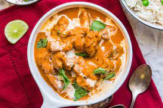

Butter Chicken

Description
Butter chicken is one of India's most famous recipes. This delicious dish was created
by Kundan Lal Gujral in 1947. Since its inception, the dish has been a staple
in indian households and resteraunts alike.
The dish contains chicken marinated in a delicious buttery blend of gravy.
The gravy is usually orange in color with a thick consistency, making the dish
stand out. Other ingredients are usually added to the gravy, including basil leaves
raw onions, and many others if the chef so chooses too add them. These extra
ingredients will add flavor to the gravy. Let's learn how to make it! We will start
with the ingredients needed then move onto the directions.
Main Ingredients
- Butter
- Chicken
- Cream
- Garlic
- Yogurt
- Garam Masala
- Chili Pepper
- Onion
Now that we have the ingredients, lets get to cooking!
Note: Any ingredient listed
in the steps that isn't in the main ingredients are optional to add.
Directions
- Take the boneless chicken and cut it into small pieces.
Add yogurt, red chilli powder, salt, dry fenugreek leaves, lemon juice and ginger-garlic paste.
Mix it well and keep it in a fridge for marinating for at least 6 hours or overnight.
- Heat the oil in a kadhai or wok and deep fry the chicken pieces till
light golden in color or till chicken is completely cooked as shown below in the picture.
- Take it out from the oil and keep it aside. Heat the oil in another pan or wok and add chopped
onion, cumin seeds and green chilli. Fry it for about 4-5 minutes or till onion is mushy.
- Add chopped tomato, Cashew nuts, almonds, red chilli powder, coriander powder, dry fenugreek leaves,
bay leaves and salt. Cook the spices for another 2-3 minutes. Now let it completely cool by itself.
- Grind the cooked ingredients along with 1/2 cup water to make fine and smooth paste.
- Heat the wok with 1/4 cup butter and add ground paste. Cook the spices on slow heat till
butter shows separately. Then add 1/4 cup more butter and food color.
- Cook it for another 4-5 minutes and add fried chicken pieces and mix it well.
- Add 2 cup boiled water and cook covered for 5 minutes. Now add fresh cream and mix it
well and immediately switch off the flame.
- Heat the coal pieces on direct flame as shown below in the picture. Make a small bowl
from aluminium foil and put it into wok and put the heated coal piece into bowl and pour
1 teaspoon ghee on coal and immediately covered it so that the gravy can absorbs the
essence of coal.
- Butter chicken is ready, garnish with some more butter and serve hot with chapatti or Naan.
- Enjoy!!!